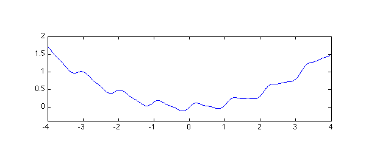
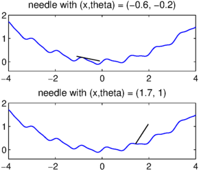
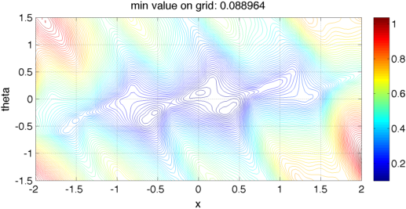
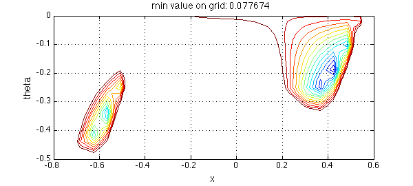
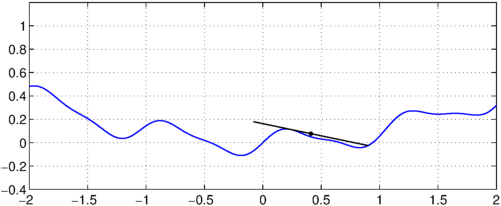

function needle()
The final problem for Oxford's Numerical Analysis Problem Solving Squad this year was the following:
A needle of length $1$ rests on a surface defined by the height function $$ h(x) = 0.1 x^2 + 0.1\sin(6x) + 0.03\sin(12x). $$ What is the lowest possible height of the centre of the needle?
Let's begin with a picture:
LW = 'linewidth'; FS = 'fontsize'; MS = 'markersize';
s = chebfun('s',[-4 4]);
h = .1*s.^2 + .1*sin(6*s)+.03*sin(12*s);
close all, plot(h,LW,1), axis equal, axis([-4 4 -.4 2])

We see immediately that the optimal position of the center of the needle, call it $x$, will lie in $[-2,2]$. Actually it's pretty clear it will lie in $[-1,1]$.
This is obviously an optimization problem, but exactly how should we formulate it? One interpretation is that it is a problem of semiinfinite programming, because it mixes an objective function to minimize with a continuum of constraints. Presumably there are methods that could be used to solve it in this framework.
Here in the Oxford Numerical Analysis Group, when we hear the word "continuum", we think Chebfun. Suppose we specify two variables: $x$, the horizontal position of the center of the needle, and $\theta$, its angle counterclockwise from the horizontal. Given $x$ and $\theta$, we then ask how low the needle can lie. Let
$$ y(x,\theta) $$
be its minimal height, given that it does not cut below the surface. Then $y(x,\theta)$ is just a maximum of a continuous function over an interval, which we can compute with Chebfun like this:
function y = minfun(x,theta)
r = .5*cos(theta); hx = h{x-r,x+r};
needle = chebfun(@(s) tan(theta)*(s-x),[x-r x+r]);
y = max(hx - needle);
end
And here is a function for plotting a particular configuration:
function plotneedle(x,theta)
y = minfun(x,theta);
r = .5*cos(theta); hx = h{x-r,x+r};
needle = chebfun(@(s) y+tan(theta)*(s-x),[x-r x+r]);
hold off, plot(h,'b',needle,'k',LW,1)
axis equal, axis([-4 4 -.4 2])
end
For example, here are needle positions for $(x,\theta) = (-.6, -.2)$ and $(x,\theta) = (1.7, 1)$.
subplot(2,1,1)
plotneedle(-0.6,-0.2), title('needle with (x,theta) = (-0.6, -0.2)',FS,14)
subplot(2,1,2)
plotneedle(1.7,1), title('needle with (x,theta) = (1.7, 1)',FS,14)

Now we just have to minimize over $x$ and $\theta$. Let's first do that over a wide range.
npts = 25;
tic, x = linspace(-2,2,npts); theta = linspace(-1.5,1.5,npts);
[xx,thth] = meshgrid(x,theta); yy = 0*xx;
for k = 1:length(x)
for j = 1:length(theta)
yy(j,k) = minfun(xx(j,k), thth(j,k));
end
end
xxp = linspace(-2,2,100); ttp = linspace(-1.5,1.5,100)';
yyp = interp2(xx,thth,yy,xxp,ttp,'cubic');
close, contour(xxp,ttp,yyp,80), grid on, xlabel('x',FS,14), ylabel('theta',FS,14)
colorbar, title(['min value on grid: ' num2str(min(yy(:)))],FS,14), toc
Elapsed time is 18.043426 seconds.

In this picture we see that there are two promising regions: one with $(x,\theta) \approx (-.5, -.4)$, and one with $(x,\theta) \approx (.5, -.2)$. The central white regions have an interesting interpretation: if the needle is balanced on top of a mountain, then moving it left or right, or tilting it, doesn't have much effect.
Zooming in confirms this picture:
tic, x = linspace(-0.8,0.6,npts); theta = linspace(-0.5,0,npts);
[xx,thth] = meshgrid(x,theta); yy = 0*xx;
for k = 1:length(x)
for j = 1:length(theta)
yy(j,k) = minfun(xx(j,k), thth(j,k));
end
end
xxp = linspace(-0.8,0.6,100); ttp = linspace(-0.5,0,100)';
yyp = interp2(xx,thth,yy,xxp,ttp,'cubic');
levels = 0.06:.003:0.12;
close, contour(xxp,ttp,yyp,levels), grid on, xlabel('x',FS,14), ylabel('theta',FS,14)
title(['min value on grid: ' num2str(min(min(yy)))],FS,14), toc
Elapsed time is 17.673203 seconds.

The winner seems to be the region on the right. From here the right thing to do is call a bivariate optimization routine. In basic MATLAB the simplest one is the direct search code
function y = minfunwrapper(xvec) y = minfun(xvec(1), xvec(2)); end
Here goes.
opts = optimset('tolx',1e-14,'display','off');
guess = [.41, -0.2];
tic, [xvec,yval] = fminsearch(@minfunwrapper,guess,opts); toc
Elapsed time is 8.119365 seconds.
So it would seem that to 10 digits or more, the minimal height is around
yval
yval = 0.076897745875264
Here is a closeup of the solution:
plotneedle(xvec(1),xvec(2)), hold on axis equal, axis([-2 2 -.4 1.2]) plot(xvec(1),yval,'.k',MS,12), grid on

end